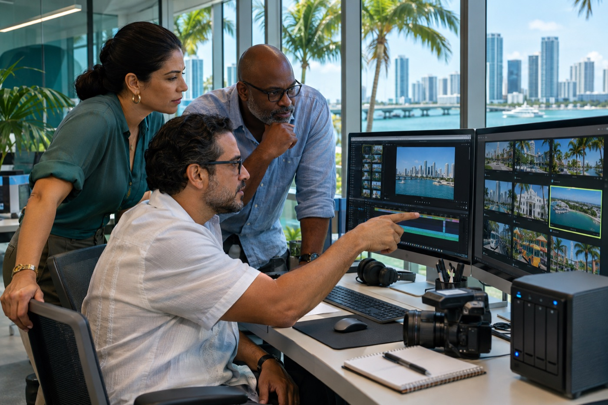
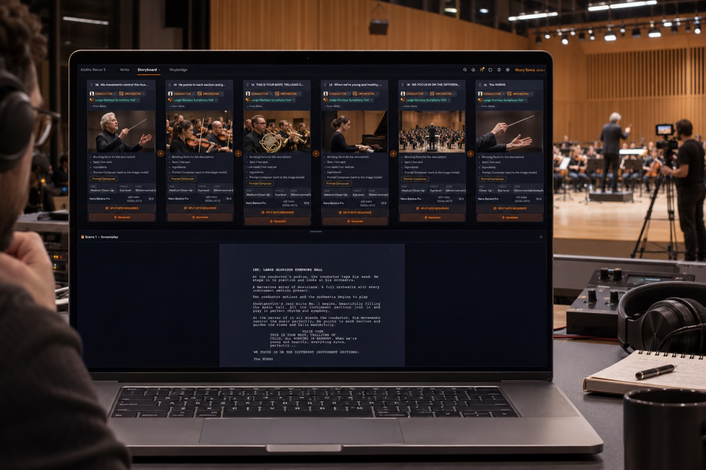
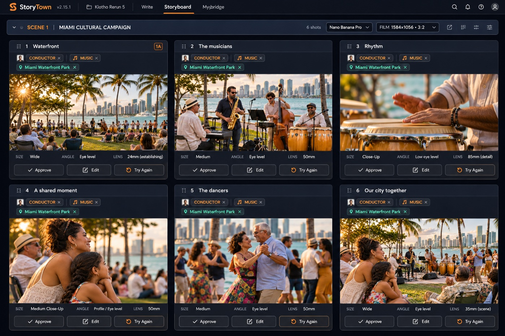

Su patrimonio audiovisual. Con un futuro creativo.
Convierta las grabaciones que ya tiene en nuevas oportunidades. Dé a su equipo más tiempo para crear, más formas de contar su historia y el apoyo directo de quienes desarrollan las herramientas.
Conservación del archivo, producción creativa y soporte técnico continuo. Rushes + StoryTown, adaptados por quienes los desarrollan.

La memoria institucional cobra vida.Su archivo. Su equipo. Su próxima historia.
Preservar la memoria institucionalAprovechar los recursos existentesAmpliar las posibilidades creativas del equipo
ENCUÉNTRELO. REUTILÍCELO. REIMAGÍNELO.
El material que ya tiene. Nuevas posibilidades.
Encuentre y organice sus grabaciones con Rushes. Reimagínelas con StoryTown, nuestra plataforma de creación audiovisual con inteligencia artificial generativa. Adapte una toma existente, actualice una escena o explore una versión diferente, sin empezar cada producción desde cero.
Formamos a su equipo para utilizar ambas aplicaciones en su trabajo diario y ofrecemos soporte técnico continuo, desde la organización del archivo hasta la creación y mejora del material audiovisual.
RushesCONSERVACIÓN DEL ARCHIVO
Encuentre el material. Póngalo a trabajar.
Organice, encuentre y reutilice grabaciones en el almacenamiento que controla su organización. La detección de rostros ayuda a localizar personas; las palabras clave detalladas y las descripciones claras facilitan la búsqueda y el aprovechamiento del archivo.
Localice personas, temas y fragmentos hablados en sus grabaciones.
Organice el archivo con palabras clave extensas y descripciones útiles.
Utilice un proceso de descripción sencillo, pensado para la rapidez, la consistencia y el trabajo diario.
Trabaje directamente dentro de Adobe Premiere Pro y DaVinci Resolve.
Proteja el material con copias verificadas y revisiones periódicas.
Valor institucional Haga que su inversión en grabaciones vuelva a dar resultados.
StoryTownDESARROLLO CREATIVO
Todo lo que podrían crear. Bajo la dirección de su equipo.
Desarrolle ideas, planifique escenas, cree personajes y avatares, y produzca locuciones, imágenes y vídeo con IA generativa, bajo la dirección creativa de profesionales. Acceda a modelos líderes propietarios y abiertos desde un mismo espacio creativo, que se actualiza continuamente con los avances tecnológicos.
Convierta el brief de una campaña en un storyboard antes de producir.
Cree personajes, avatares y locuciones para un encargo aprobado.
Explore imágenes y escenas generadas que apoyen la historia.
Elija entre modelos propietarios y abiertos para crear medios generativos.
Mantenga el criterio editorial en manos de sus profesionales.
Valor institucional Dé a su equipo más formas de hacer realidad una idea.
DEL SITIO WEB DE RUSHES
Ver el archivo. Encontrar la historia.
La entrevista precisa. Un momento olvidado. El plano que da sentido a la historia. Ayude a su equipo a encontrar el material que merece volver a producción.
Más posibilidades para el equipo en el que ya confía.
Mantenga a su equipo al día con la inteligencia artificial generativa. Integramos modelos propietarios y abiertos actuales en StoryTown y le ayudamos a aprovecharlos: crear avatares digitales y voces, modificar elementos concretos de una toma existente o dar una nueva forma al material que ya conoce.
Nuestra experiencia incluye el entrenamiento de modelos a medida y la adaptación de los procesos creativos a sus necesidades. Sus profesionales acceden a nuevas formas de crear y transformar material audiovisual, con la orientación práctica de quienes desarrollan el software.
STORYTOWN
Un espacio creativo. Un mundo de posibilidades.
Personajes, avatares, voces, imágenes y vídeo: StoryTown reúne la creación de medios generativos en el proceso de producción de su equipo. Integramos modelos líderes propietarios y abiertos y ampliamos continuamente las opciones disponibles para que sus profesionales puedan aprovechar los avances tecnológicos desde un mismo espacio de trabajo.
DE LA IDEA A UNA PROPUESTA VISUAL
Del brief al storyboard de su próxima campaña.
Empiece con una conversación. Describa su idea con sus propias palabras a AD, el asistente conversacional integrado en StoryTown. AD le ayuda a desarrollar el brief, explorar propuestas visuales y construir un storyboard. Refine las escenas, los personajes y la locución sobre la marcha, con su equipo al mando desde la primera idea hasta el plan de producción.
Un equipo detrás de las herramientas. Durante todo el proceso.
Trabaje directamente con quienes desarrollan Rushes y StoryTown. Combinamos desarrollo de software y experiencia audiovisual para ayudar a su equipo a usar las herramientas, adaptarlas a sus necesidades y avanzar cuando surjan nuevas prioridades.
Soporte técnico en cada etapa.
Desde la evaluación del archivo y la configuración de las herramientas hasta la producción diaria, acompañamos a su equipo durante todo el proceso. Su personal audiovisual y técnico cuenta con profesionales a quienes acudir cuando surgen dudas o nuevas necesidades.
Software que evoluciona con su departamento.
Ambas aplicaciones son software propio: su institución trabaja directamente con quienes las desarrollan. Podemos modificar las herramientas, adaptar los flujos de trabajo y crear funciones específicas para sus necesidades. Definimos juntos las prioridades, el alcance y los plazos para que el desarrollo responda a la forma real de trabajar de su equipo.
Conserve las herramientas de edición que su equipo conoce.
Rushes funciona dentro de Adobe Premiere Pro y DaVinci Resolve, conectando la búsqueda y selección de material del archivo con las herramientas de edición que sus profesionales ya utilizan. Le ayudamos a configurar ese flujo dentro de su entorno de producción habitual. Trabajamos con su equipo de informática en el almacenamiento, el acceso a la red, los requisitos de seguridad y las adaptaciones que necesite su institución.
Creado por profesionales que conocen el medio.
La experiencia práctica en el trabajo audiovisual guía el software, el acompañamiento y las mejoras que desarrollamos con su equipo.
CREACIÓN DIRIGIDA POR PERSONAS
Nuestra tecnología abre posibilidades. Su equipo les da sentido.
Dé forma visual a una idea antes del rodaje. Explore escenas, personajes y voces en StoryTown, y deje que su equipo decida cómo dar vida a la historia.

EN LA PRÁCTICA
Del archivo de la ciudad a su próxima campaña.
Ejemplo ilustrativo del servicio
“Un departamento de comunicación prepara una película sobre la vida cultural de la ciudad. El archivo aporta la memoria; su equipo define la historia y dirige la creación.”
El encargo
Una película breve que conecte a las personas, los lugares y la cultura de la ciudad.
Rushes · archivo de Miami
Encontrar lo que ya existe.
Localice grabaciones y entrevistas, seleccione los momentos relevantes y reúna el material para editar.

StoryTown · storyboard de campaña
Dar forma a la campaña.
Convierta el brief en un storyboard. Explore personajes, avatares, locuciones y nuevas imágenes, con su equipo al mando.
Imagen ilustrativa de campaña
Crear una nueva historia.
Combine el material seleccionado con los nuevos recursos. Su equipo edita, comprueba los derechos y la información, y aprueba la pieza final.
Flujo de trabajo e imagen de campaña ilustrativos; no representan un proyecto de cliente ni una integración automática.
Su archivo aporta el punto de partida. Su equipo conserva la dirección creativa.
PONGA A TRABAJAR LA INVERSIÓN QUE YA HA HECHO
Más valor con los recursos que ya tiene.
Continuidad
Mantenga accesibles años de grabaciones y conocimiento institucional acumulado, aunque cambien el equipo y las prioridades.
Menos búsquedas. Más creación.
Ponga el material reutilizable al alcance de su equipo para que pueda dedicar más tiempo a su próxima historia.
Más formas de hacer realidad las ideas
Explore una campaña, construya un storyboard o desarrolle una voz y una propuesta visual desde un mismo espacio creativo.
Un servicio que crece con usted
Parta de las prioridades de su departamento. Adapte el soporte y el software a la forma real de trabajar de su equipo.
UN SERVICIO ADAPTADO A SU DEPARTAMENTO.
Su departamento. Sus flujos de trabajo. Nuestro apoyo continuo.
Exploremos lo que su equipo podría hacer con Rushes y StoryTown. Traiga un reto de archivo o una próxima campaña. Le mostraremos las herramientas, hablaremos de las adaptaciones que necesita y prepararemos una propuesta para su departamento.
Revisamos su archivo, los próximos proyectos y su forma actual de trabajar.
Configurar y adaptar las herramientas
Adaptamos Rushes y StoryTown a su entorno de producción y a sus requisitos de informática.
Formar a su equipo
Enseñamos a su personal a encontrar, reutilizar, reimaginar y crear material audiovisual con ambas aplicaciones.
Seguir a su lado
Ofrecemos soporte técnico continuo y desarrollamos mejoras a medida que evolucionan sus necesidades.
Sus datos y su entorno de trabajo
Antes de la configuración, acordamos con su equipo de informática el almacenamiento, los accesos, la compatibilidad y cualquier procesamiento externo de IA. Su institución decide qué material se utiliza y qué servicios se autorizan.